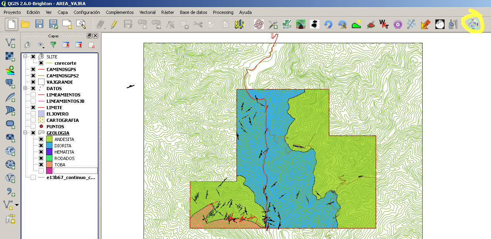
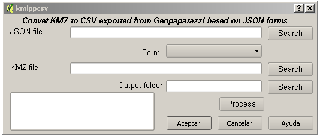
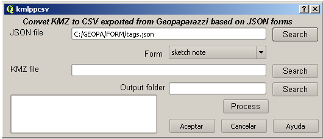
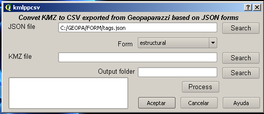
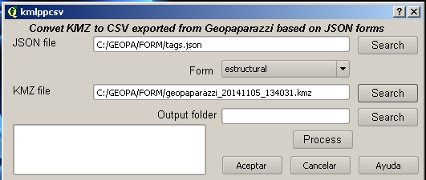
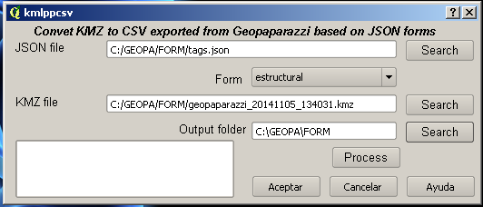
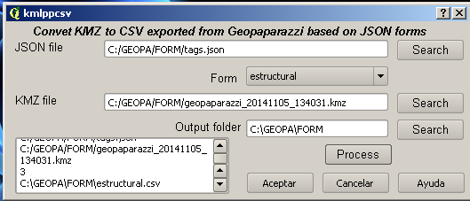
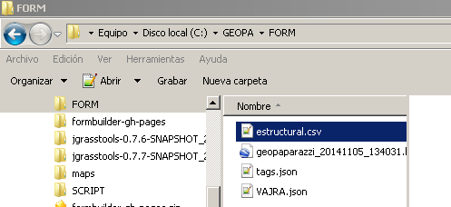
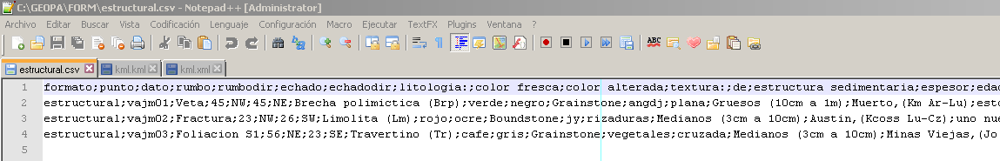
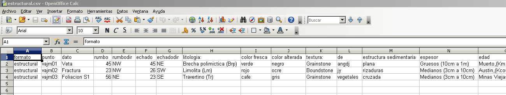

Welcome to Kmzgeopapaimport’s documentation!¶
This plugin is based on GeopaparazziTags without pykml
dependency (this is because i can't install pykml in my
pc)
In Geopaparazzi main window choose "export"
Choose KMZ icon
So all data will be exported to the location showed
Copy KMZ file showed, as well "tags.json" file located
in geopaparazzi folder in the device to local drive
folder in pc
(There is an example in
C:\Users\User\.qgis2\python\plugins\Kmzgeopapaimport\help\example)
Go to Qgis and open Kmzgeopapaimport


Findout JSON file

Choose the form to process

Findout KMZ file

Findout ouyput folder

Click process

The file is saved to output folder

It can be open it with Notepad++

or opencalc

or any other paid software to postprocess